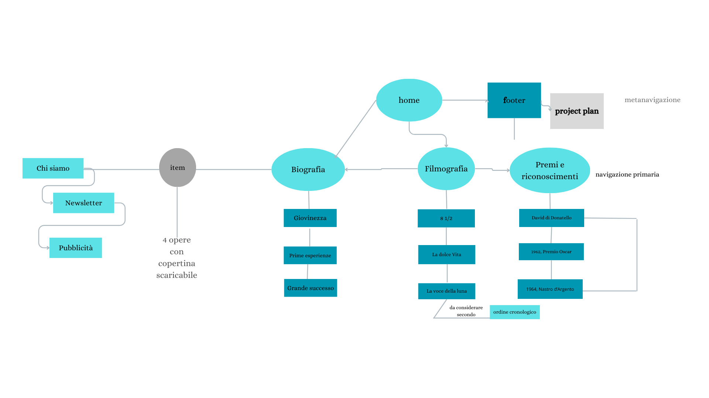
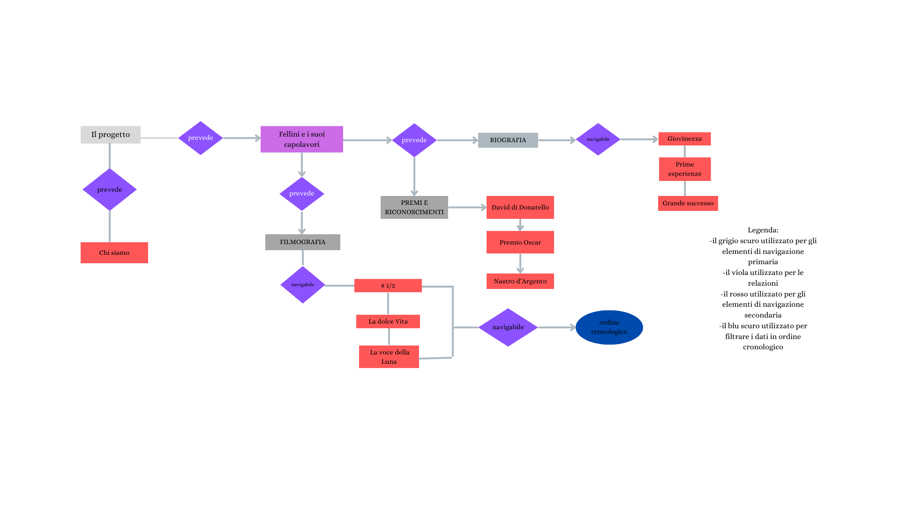

Il briefing
Obiettivi, finalità e scopo
Il progetto vuole regalare uno sguardo quanto più ampio possibile alla produzione artistica felliniana. Esso ha, inoltre, la finalità di dare una visione semplice e immediata della poetica del grande regista. I primi particolari che saltano all’occhio sono le suddivisioni dei momenti salienti della sua vita privata e lavorativa, navigabili secondo un ordine cronologico. Si ha perciò non solo l'obiettivo di far conoscere la biografia del Fellini, il contesto in cui egli è cresciuto ma, anche, quella immensa provincia italiana che il suo cinema non si stancava mai di raccontare.
Attraverso un gioco di colori neutri e parole chiave centrali, l’esplorazione attraverso le varie pagine avviene in maniera spontanea e veloce.
Nel progettare il sito, si ha anche l'intenzione di rendere più conosciuto il regista tra il pubblico più giovane: si rende infatti disponibile, oltre al download locale di trame e copertine dei film prescelti, di iscriversi, in pochi semplici passaggi alla newsletter, per restare sempre aggiornati scegliendo tra un rosa di tre lingue messe a disposizione: italiano, francese e inglese.
Utente tipo
Il progetto è destinato ad avere come utenti principali coloro che vogliano approcciarsi alla conoscenza del principale esponente del cinema italiano, in particolar modo i millenials che hanno poche occasioni di conoscere il cinema felliniano. Esso si rivolge, perciò, anche ai docenti di materie letterarie delle scuole secondarie di secondo grado che vogliano avvicinare gli studenti al mondo felliniano. A questo scopo la classificazione per temi delle opere,, permettono a chi sa già cosa cercare di trovare facilmente i contenuti e di approfondire la biografia dell'artista principalmente per scopi didattici e di ricerca, ma anche per interesse personale. La struttura intuitiva del sito permette anche a chi vi si imbatte per caso di osservare ed esplorare le varie pagine, al fine di costruire un interesse nell'approfondire la conoscenza del regista. La presenza di approfondimenti sulla biografia e sul contesto invita comunque a una navigazione a fini di ricerca anche al di fuori del contesto scolastico.
Benchmark
Esistente e competitors
Non esiste, di certo, un solo sito che ci racconti dell’importante arte cinematografica di Fellini. Gli archivi online, le mostre cinematografiche, siti web di musei che espongono tante raccolte fotografiche della sua vita privata e lavorativa raccontano spesso di lui in qualsiasi sfaccettatura. Per la realizzazione di questo sito web è stato fondamentale il riferimento alla pagina Wikipedia dedicata al regista. Comprende migliaia di nozioni e catalogazioni dei numerosissimi premi ottenuti da Fellini, disposti in ordine cronologico. Da qui è stato facile ispirarsi per una suddivisione ancor più lineare e semplice, poco eclettica e precisa, per non creare confusione ed essere facilmente raggiungibile tramite le pagine item del progetto. Un altro sito meraviglioso preso da esempio e da ispirazione è quello del ‘Museo Fellini Rimini’, ciò che colpisce è la grande presentazione delle locandine dei film, riportate insieme all’anno di realizzazione scritto con caratteri grandi. L’idea viene ripresa ma riformulata nel nostro sito web: 4 film in esame, un estratto di trama e premio destinato al regista per i suddetti capolavori. Rispetto al sito di riferimento la ricerca delle nostre locandine è più immediata e meno confusionaria, trovabile già nella pagina della schermata home del sito. Lantermaweb.it è stata una lente d’ingrandimento per riuscire a percepire che persona è stata Fellini, cosa si celava dietro un uomo grande e carismatico. Parlava del processo della realizzazione dei film come un viaggio di cui gli interessava unicamente la partenza e non l’arrivo, immaginandolo vago o anche inesistente. Per il nostro sito web è stato un elemento cardine per creare una pagina Home fatta di citazioni che fossero d’impatto e curiosità per il fruitore e scopritore delle altre pagine. In questo caso, rispetto al sito di riferimento, rappresenta solo una parte del sito web in quanto ci teniamo a porre l’attenzione su una conoscenza più varia e completa. Infine, verremo colpiti subito dalle immagini che accompagnano questi frammenti di suoi pensieri, cosa inesistente nel sito di base.
STRUTTURA
MAPPA DEI CONCETTI
Nella mappa dei concetti si ha l'illustrazione grafica del brief del progetto. Finalità della mappa è chiarire i rapporti che intercorrono tra gli elementi nominati nel brief ed evidenziare i contenuti del sito. Sono stati utilizzati vari colori. Vediamo cosa corrisponde ad una navigazione principale, secondaria e le varie pagine item. Nello specifico si può notare il colore azzurro per la navigazione primaria(Filmografia, premi e riconoscimenti e la biografia), il blu per gli elementi di navigazione secondaria(giovinezza, prime esperienze, grande successo).Viene sottolineato come questi dati siano organizzati secondo un ordine cronologico.

SCHEMA DELLE DIPENDENZE
Lo schema delle dipendenze mostra la struttura gerarchica delle pagine del sito. Nella pagina Home oltre a immagini supportate da citazioni di Fellini, è possibile esplorare il sito ed in particolare soffermarsi su uno slideshow realizzato con immagini appartenenti ad alcuni momenti della vita del regista. Nel footer si è ricavato l’accesso per il Web Project Plan. All’interno dello schema, con dei rettangoli grigio scuro vengono segnalati gli elementi di navigazione primaria, con dei rettangoli rossi la lista dei dropdown cliccabili (elenco di una selezione di film,momenti importanti della sua vita, riconoscimenti ottenuti), con cui si accede alla navigazione secondaria. Per la biografia è stata immaginata ed implementata una pagina di accesso molto semplice riguardante il periodo del 'grande successo', con immagini e descrizioni del periodo più glorioso della sua esistenza.Le immagini sono supportate da una una casella di testo. Per la sezione della filmografia è stata pensata ed implementata una pagina in cui sono stati riportati alcuni esempi di locandine di una selezione di film, con annessa trama. Sono categorizzati in ordine cronologico. Infine, la pagina "Chi siamo", presenta la descrizione del progetto e la possibilità di iscriversi alla newsletter, che ha come scopo quello di promuovere il sito e di avvicinare quanto più possibile gli utenti al regista.

Categorie di un item foglia
Nel sito sono disponibili 3 categorie di item foglia:i film scelti con le relative locandine, immagini del regista e biografia del regista. Prendiamo in esame le categorie descrittive delle immagini delle locandine con annessa descrizione di film.